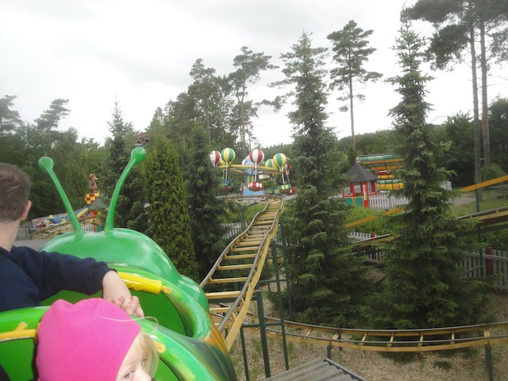
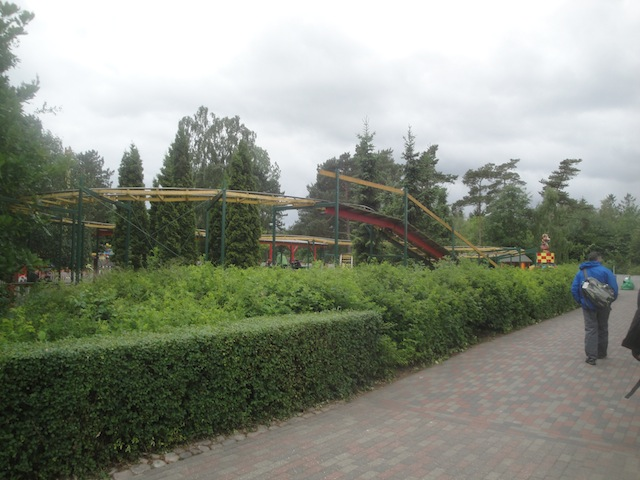
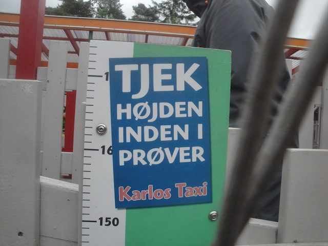

| |
Mato Mainio Review

Once you get in the seat, the ride operator pulls you out of the station and away you go. There's a small drop out of the station which is followed by the lift hill. After climbing up the 10 ft lifthill, you go around a turn and is followed by a little dip, the you go through another turn to face the final 6 ft drop then you go around another turn, and then you again. You get 3 laps around the track. It was a Wacky Worm. Nobody cares that this ride is gone and no longer at Djurs Sommerland. Actually, apparently it's not gone. It still exists. It apparently got moved to a place called Vauhtipuisto. From what I saw on RCDB, this place appears to be just a credit whoring spot in Finland. Well, at least now I never have to go there (probably wouldn't have anyway since I may be a credit whore, but I'm not THAT big a credit whore) because I have this credit.
2/10
Location: Vauhtipuisto
Opened at Djurs Sommerland in 2000
Moved to Vauhtipuisto in 2015
Built by: SBF Visa Group
Last Ridden: June 19, 2014
I have ridden this exact same ride at the following parks.
American Fairs
Eden Park
Lake Winnie
Rainbow Magicland
Sommerland Sjaelland
Walygator Parc
Zoomarine
Karlo's Taxi Photos


Home
|